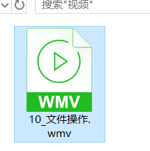

linux发展历史
wamp
w：windows
a：apache
m：mysql数据库（Oracle 商业公司 ） MariaDB（mysql分支 和mysql完全兼容）
p: PHP 有可能是Python
lamp：linux操作系统
lnmp ：
l ： linux操作系统
n：Nginx web服务器（俄国人开发的， 解决互联网Web2.0 问题：C10k问题 ）
- <1. 硬件升级 2. 集群架构 LB集群 负载均衡集群 3. 优秀web软件>
==注意：黄金搭档 慢慢的被取代了。PHP市场被分割的很厉害。==
- Python web领域 爬虫（以前PHP里面的数据采集 dedecms系统 火车头采集系统 PHP第三方采集库）
- golang web领域（不是太成熟、很有远景）
常见操作系统简介
常见的操作系统，你知道的有哪些？
Windows 操作系统（傻瓜操作系统）：常见的有xp（国企 1. 买版权 2. 习惯操作 3. 内部系统）、Vista（安全 但很慢）、window7（成功）、window8（过渡的）、window10（成功）等，该桌面版操作系统非常适合大众使用；同时也有windows server服务器端的操作系统，适合运行服务（周期性的死机，闭源操作系统）。
Ubuntu操作系统：中文叫做乌班图，是一个非常成熟的linux桌面版，非常的绚丽，这个操作系统下去一定要多了解，很多的公司使用的是该操作系统。( window > mac > linux（Ubuntu天生适合做开发） )
MacOS 操作系统：苹果公司出的操作系统，需要使用苹果的硬件才可以使用，但是目前也可以在普通的PC上使用，俗称黑苹果。该操作系统天生适合做开发，一般被程序员和
设计师钟爱。
RedHat操作系统：俗称红帽，该操作系统一般被企业使用，当我们听到红帽子5、红帽子6、红帽子7 的时候，代表的就是该操作系统，一般来说这个操作系统是需要收取服务费，一年最基本大概10w左右。
CentOS操作系统：该操作系统为社区版操作系统，适合在互联网企业，是完全免费的，但是这个操作系统没有提供服务支持，当遇到问题需要自己解决。并且该操作系统是完全基于红帽的，规则如下：centos5.5基于红帽子5； centos6.5 ，centos6.8 基于红帽子6等。
==注意==：现在能接触到的都是 分时操作系统。
- 即，多任务：同一时间可以运行多个任务（并行）。
- 以前的是 批处理：一次只能做一件事 串行
cpu 42亿次左右(1s) 1/60s-60个(单cpu 微观上还是串行) 宏观上并行。
==注意==：实时操作系统。如，独享 ucosii 导航系统（导弹）。
linux发展史
参考【linux发展史】
- centos 和 reahat是完全一样的
- 都是类 Unix操作系统（为什么叫类Unix操作系统？遵循 postfix规范 到时候操作系统的目录结构是基本一样的、命令也是基本相同、管理方式也是基本相同….）
linux含义
linux狭义：指李纳斯开发的linux内核部分（3% ），最基本的内核代码，操作系统的核心，只负责最基本的设备管理（1. 内存管理 2. 硬件控制…）
linux广义：指linux各个厂商基于linux内核研发的linux产品，例如红帽、Debian、Ubuntu等。我们常用的就是 Centos5 或者 Centos6 基于RedHat公司的产品进行开发。完全免费。
注意：目前这个内核代码版本是在 4.x左右。
注意：虽说目前的最新的版本是4.x，但是在linux的发行版里面的使用的最多的还是2.6.x这个版本的内核。（因为从2.x之后的版本就不在由李纳斯本人开发维护，而是交给他的团队维护）。
CentOS简介
CentOS（Community Enterprise Operating System：社区企业操作系统）是Linux发行版之一，它是来自于Red Hat Enterprise Linux依照开放源代码规定释出的源代码所编译而成。由于出自同样的源代码，因此有些要求高度稳定性的服务器以CentOS替代商业版的Red Hat Enterprise Linux使用。两者的不同，在于CentOS是完全免费的，而RedHat的使用需要收取服务费的。但是Centos目前也被RedHat收购了。
其主要的特点如下：
1、简单易用,安全性高,且支持图形操作界面,并且linux对硬件的要求是非常的低的。如果不安装图形化的界面，只要给一个128M都完成可以使用。（单片机 ARM 几M即可）
2、其安装步骤支持全图形操作，且有中文包补丁
3、能够免费实现在线软件安装服务(yum包管理器)
4、被誉为世界上最适合作为服务器的底层的Linux操作系统,其性能十分稳定 （web业务来说， 基本都是linux ，比如，Ubuntu server|desktop）
5、有32位和64位两种操作系统安装镜像
6、多任务，多用户的操作系统。
其主要的版本有：
1、CentOS5.5
2、CentOS6.5
3、CentOS6.8
4、CentOS7.0 (区别还是很明显的：服务器管理方式不一样， 基本的命令也有一些不同)
5和6之间基本没有区别。
理论上会某个linux发行版，其他的linux操作系统全部都会。其他的发行版只是在linux的内核上加入一些自己的软件或者是软件管理器。
CentOS安装
- 下载操作系统镜像
- 安装（1. 裸机 2. 虚拟机模拟一台电脑）
- 购买阿里云的云服务
什么是虚拟机？
虚拟机实际上是一个虚拟PC的软件，它可以在现有的操作系统上虚拟出一个新的硬环境，相当于虚拟了一台新的计算机，从而实现了一台机器独立运行两个或者两个以上的操作系统。
虚拟机软件：Vmware、VirtulBox
VMware软件安装
一般软件的安装方式，全程下一步即可。
虚拟电脑的创建
参考【虚拟电脑创建和centos操作系统的安装.doc】

centos操作系统的安装
参考【虚拟电脑创建和centos操作系统的安装.doc】

==文件系统树==
在正式学习linux之前，我们有必要了解下linux的文件系统树，linux的这种树形结构是规定好了的，不允许随便更改。其实在windows下也存在文件系统树（是从盘符开始 c:/windows/a.txt）
在Windows里面是存在多个盘符，每个盘符下存在很多的文件和文件夹。但是这个东西如果是在linux下则不再成立，因为linux有自己的文件系统树。
linux下没有那么多的盘符，linux下只存在一个盘符，叫做 根目录 （/），根下存在很多的目录，但是对于linux这些目录都是事先规定好，基本所有的发行版都是一样。
1 | /（c:/） |
bin目录
简介： binary 的简写， 主要存放linux下可以执行的==二进制命令==（如常见的ls），普通用户和超级管理员都可以使用的二进制命令。
sbin目录
简介：super bin，超级管理员可以执行的==二进制命令==，普通用户不可以执行。
home目录
简介：home ==用户的家目录==，每当在linux下创建一个登陆用户，就会在该目录下创建对应的文件，其用户可以在该目录下执行可读可写的操作。
root目录
简介：==root 超级管理员的家目录==。
etc 配置文件目录
简介：etc 该目录主要存放系统的==配置文件==信息，例如apache、mysql等服务的配置文件。
usr目录
简介：usr 是Unix software resource的简写，表示Linux的==软件资源==目录主要是存放用户自定义安装软件的目录，lamp环境的 Apache MySQL php都会安装在这里，类型Windows下的Program Files。
var目录
简介：var是variable单词的简写，代表是可变的，到时候该目录主要存放系统的日志，以及网站的根目录等等。
Linux和Windows的区别（重要）
- Linux没有盘符，windows拥有盘符；在linux下一切都是从 根目录(
/)开始的。 - Linux严格区分大小写，而windows不区分大小写，由于linux严格区分大小写，因此linux认为a.php和A.PHP是两个不同的文件，而在windows当中windows会认为这是2个相同的文件。
- windows大部分的工作是通过图形操作界面就能够完成，linux大部分的工作是通过命令行来完成
==Shell==
简介
在linux使用的过程中，一般来说可以作为桌面系统进行使用，例如常见的Ubuntu操作系统，但是更多的是做为服务器进行使用。一般来说如果是在服务器模式下使用的话，这个时候是没有安装桌面的，这个时候我们就要一个人机交互的转换程序，这个工具一般被称为shell，也叫作cli（命令行接口）。现在由于我们是学习，所以安装了图像界面，在图形界面下，我们也是可以开启一个命令行终端的。除了常见的命令行shell，还有图形化的shell，一般简写为Gui，例如window操作系统。

常见的linux shell分类
常见的shell有==sh==、==bash== 、==csh==等，一般来说我们都是使用的bash，该shell解释器位于/bin/bash，是一个二进制的命令，可以帮我们去翻译用户的行为，并且在linux下是存在编程的，叫做shell编程。可以做linux下的自动备份，定时任务等(运维，现在来说一般也不错shell编程 。现在一般使用Python进行运维管理，实现自动化运维)。
现在云服务器太方便。（阿里云支持弹性升级）（BPG IDC机房 郊区）（1. 游戏公司 不可能买云服务器 I/O 虚拟化 2. 银行 3. 大型企业 平安银行 不用电脑记账 手工记账 打算盘 纸张抄）
如何查看当前系统使用的shell呢？
1 | echo $SHELL |
那么当前linux操作系统支持哪些shell呢？
1 | # cat /etc/shells |
如何使用sh呢？
1 | sh |
如何退出呢？
1 | exit |
命令符解释器
当打开一个shell终端后，会出现一个光标在闪烁，被称为命令提示符：

注意：由于linux在服务器环境下，一般来说都是没有图形化的界面，都是通过命令行进行操作，所以必须要掌握好相关的命令。到时候可以在命令提示符下输入相关的命令，然后通过这些命令完成相关的任务。
命令格式讲解
1 | 命令 -选项 参数 |
命令：是linux系统提供的二进制的命令（/bin /sbin/ /usr/bin），一般分为超级管理员命令和普通用户的命令，超级管理员没有权限限制。
选项：选项是用来修饰命令的。
参数：参数是命令作用的主体，命令在谁的身上产生效果。
例如ls是展示某个目录下的文件信息，但是如果需要展示全部的文件信息，可以加-a选项。
如果是要查看root家目录下的文件信息，则需要使用
1 | ls -la |
ls 列出文件命令
list： 列出目录里面的文件信息，在linux下有一个哲学，linux下一切皆文件，所以展示的既有文件，也包含文件夹。1
ls
以详细的方式展示文件信息 -l (longtext 以长格式，详细信息)1
ls -l
展示所有文件，包含隐藏文件1
ls -la
列出指定文件夹下的文件信息1
ls -l /
ll命令
小写字母 l，这个命令其实就是ls -l指令的简写。1
ll
clear 清屏
1 | clear |
su 切换用户命令
su : 全称 （switch user）
如果当前是root用户切换为普通用户，那么是不需要输入任何密码的，因为root是超级管理员。如果当前的用户是一个普通的用户切换成为root，那么必须输入超级管理员的密码。同时需要注意，在输入密码的过程中，密码是没有回显的。
1 | su - root |
注意：如果直接使用 su 用户名进行切换，一般也不会自动回到用户的家目录，这个时候我们可以在su后面加上-选项，在做切换后即可回到用户的家目录。
shutdown 关机命令
需要注意：该命令只有root才可以执行。参见的选项如下
1 | -h: 关机 相当于 halt |
halt 立刻关机命令
需要注意：该命令只有root才可以执行。
1 | halt |
reboot重启命令
需要注意：该命令只有root才可以执行。
1 | reboot |
pwd命令
打印当前用户所处的位置(print working directory)
1 | pwd |
cd 目录切换命令
在每个用户登录操作系统之后，默认是在其家目录里面，但是对于超级管理员和普通用户的家目录是不一样的。
- 超级管理员root 是在
/root目录 - 普通用户asion是在
/home/asion目录
问题：当超级管理员登录系统之后(/root—>.. / –> /home/asion)，要去到asion的家目录，如何去？
答：
- 使用绝对路径的方式：代表从根目录 (
/) 开始到达指定位置的路程/home/asion - 使用相对路径的方式：参考点（当前的位置），然后经历的路程叫做相对路径
../home/asion
==linux三个比较特殊的目录==
- 在linux里面
.和./代表的含义当前目录 - 在linux里面
..和../代表上级目录 ~代表当前用户的家目录
change directory改变当前的目录
1 | cd / |
==远程连接linux操作系统==
为什么要使用远程连接工具去操作？
答：
- 实际生产环境里面的linux服务器都是没有桌面（CLI 命令行模式）
- 服务器一般来说都是部署在郊区的机房或者购买阿里云的云服务器。
背景
通过上面的学习，我们大致了解了linux的基本命令的使用方式，在实际的服务器使用过程中，一般来说都是购买的云服务器，这个时候云服务器的提供商会给我们提供一个服务器的公网IP（互联网是可以直接访问）地址和超级管理员的密码进行远程的链接管理。例如阿里云的服务器的管理如下:
1 | Connecting to 47.52.65.14:22... |
ssh简介
如果要进行远程连接，这个时候需要在linux上运行一个sshd服务(是一个c/s架构)，然后通过一个ssh客户端进行连接操作远程服务器。该服务默认使用的端口是22端口，使用的通信协议使用 ssh协议，并且ssh协议是加密传输的，可以保证信息的安全不被窃取。现代的服务器上默认都是会安装该服务的，并且该服务器也是处于监听状态的。
通常提供：
- 公网IP地址
- 账号root和密码（1. 初始化密码 2. 初始化公钥和私钥）
ssh客户端简介
ssh的客户端比较多，常见的如下：
putty 是最为最出名，最原始，最老牌的一款简洁工具 （功能非常简陋 瑞士军刀）
xshell 是一款商业化工具，用户友好，提供免费的个人使用【首选 √】
secureCRT 一款老牌工具
ssh 命令工具，一般linux或者Mac自带(cmder： windows下加强版的命令行工具，可以模拟出来linux下常见命令)
1
ssh root@129.12.34.34
ip地址查看
1 | ifconfig |
1 | [root@dockerTest ~]# ifconfig |
xshell使用
在成功安装后，配置IP地址和用户名以及密码后即可链接服务器。
新建链接，输入服务器IP地址
输入用户名和密码

链接使用
ssh命令使用
以 root用户登录到 IP为 120.23.34.42的主机：
1 | ssh root@120.23.34.42 |
注意：在windows下的命令行需要使用特定的命令行工具cmder。
==文件夹和文件相关命令==
常见操作：增加、修改、删除、重命名、复制、移动，其注意的命令如下：
touch创建文件（本身的功能是用于更新某个文件的文件信息 例如文件的修改时间戳信息）mv移动或重命名文件（在相同位置时则重命名）rm删除文件cp复制文件mkdir创建文件夹file用于查看文件的类型（文件：不要单纯理解为文本文件，可以是一个文件夹。)
==一切皆文件== —-《linux/Unix哲学》
文件相关的命令
1 | 创建文件的命令 |
1 | 修改文件的名称(在相同位置) |
1 | 文件删除的命令 -f 强制 -r 递归 |
1 | 复制文件(源文件 目标文件) |
1 | 移动文件到指定目录 |
学习：(根据视频进行一步一步学习)

文件夹相关操作
文件夹：新增，改名，删除，文件移动到文件夹
1 | 文件夹的创建 |
1 | 目录的名称修改 |
1 | 文件夹的删除 |
解释：-r递归删除，如果文件夹下有文件，则先删除对应的文件，然后在删除文件夹， -fforce代表强制删除，不做用户的交互提示。
1 | 文件夹的复制，需要加上 -r 参数 递归 |
1 | 文件夹的移动，文件夹的移动的时候不需要加上 -r 选项 |
文件内容查看命令
对于文件的内容查看，主要有如下命令：
cat阅读文件内容【记住】less翻页查看more翻页查看tail查看文件尾部 【记住】（实际开发不是拿它看单个文件内容，而是用于做日志输出的查看）-f代表不断的刷新日志内容1
2
3tail -f nginx.log
1. 占据终端 取消 ctrl + c
2. 如果 nginx.log 文件有内容被加入了，则会立马在屏幕显示，一般用于调试head查看文件头部file查看文件类型echo输出字符串>、>>输出重定向stat查看文件信息date查看日期
复制一个文本文件，做演示
1 | cd |
1 | cat fileName(cat 命令代表查看文件里面的内容) |
1 | echo 为文件追加内容 |
1 | less 也是查看文件内容的命令 |
1 | more 命令也可以实现翻页[使用空格键做翻页] |
1 | head 代表查看文件的头部行数 |
1 | tail 查看文件尾部的行数 |
1 | file 命令 查看文件的类型 |
1 | stat 命名 查看文件时间戳信息 |
==linux常用使用技巧==
终止操作
1 | 终止操作 【ctrl+c】 |
定位行首
1 | 光标定位 快速的从命令的尾部切换首部(ctrl+a) |
定位行尾
1 | 快速的从命令的首部切换尾部(ctrl+e) |
历史命令查看
1 | 使用键盘的上下键可以查看曾经输入过的命令 |
历史命令查看
1 | 也可以使用history命令来显示之前执行的过的命令，可以通过 !数字 来执行之前的命令 |
tab键补齐
1 | tab补齐，可以使用 tab 键 快速的补齐命令 或者 文件 已经 文件夹的名称 |
重定向
1 | 重定向 |
linux下的帮助
如果在linux下对于有些命令记不清参数是什么了，这个时候可以通过如下的方式进行解决
- 百度
查看系统的帮助（英文）
- 在命令的后面加上 –help
1
2
3
4
5
6
7
8
9
10
11
12
13
14
15
16
17
18
19
20[root@dockerTest ~]# ls --help
Usage: ls [OPTION]... [FILE]...
List information about the FILEs (the current directory by default).
Sort entries alphabetically if none of -cftuvSUX nor --sort.
Mandatory arguments to long options are mandatory for short options too.
-a, --all do not ignore entries starting with .
-A, --almost-all do not list implied . and ..
--author with -l, print the author of each file
-b, --escape print octal escapes for nongraphic characters
--block-size=SIZE use SIZE-byte blocks. See SIZE format below
-B, --ignore-backups do not list implied entries ending with ~
-c with -lt: sort by, and show, ctime (time of last
modification of file status information)
with -l: show ctime and sort by name
otherwise: sort by ctime
-C list entries by columns
--color[=WHEN] colorize the output. WHEN defaults to `always'
or can be `never' or `auto'. More info below
-d, --directory list directory entries instead of contents,
在命令的前面加上 man，使用空格翻页，q键退出
1
2
3
4
5
6
7
8
9
10
11
12
13
14
15
16
17
18
19
20
21
22
23
24
25
26
27
28
29# man ls
LS(1) User Commands LS(1)
NAME
ls - list directory contents
SYNOPSIS
ls [OPTION]... [FILE]...
DESCRIPTION
List information about the FILEs (the current directory by default). Sort entries alphabetically if none of -cftuvSUX nor --sort.
Mandatory arguments to long options are mandatory for short options too.
-a, --all
do not ignore entries starting with .
-A, --almost-all
do not list implied . and ..
--author
with -l, print the author of each file
-b, --escape
print octal escapes for nongraphic characters
--block-size=SIZE
use SIZE-byte blocks. See SIZE format below